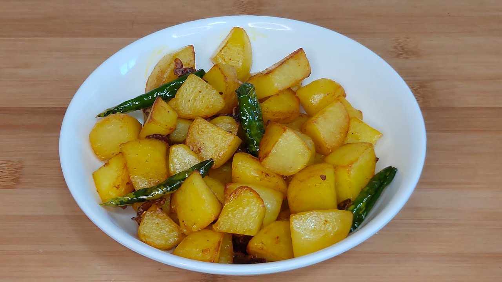

Alu kan (Fried Potato) Recipie
Description:

This is a Mizo dish called Alu Kan
Ingredients:
- Alu (potato)
- Fool oil
- Salt
- Onion
Steps:
- Chop the alu (potato) into small small cubes
- Immerse the chopped alu-s inside water
- Turn on the stove and heat up the bel (utensil)
- Once the bel heats up nicely, pour in food oil (it does not have to be too much)
- Once the oil reaches its vaporising point, chop the onion in half and immerse it in the oil and take it out after 5 seconds.
- Now drain the water from the alu-s and put them in the bel
- Stir the mixture every 5 to 7 minutes until the alu-s become soft and edible
- Then you have just made the Mizo Alu Kan